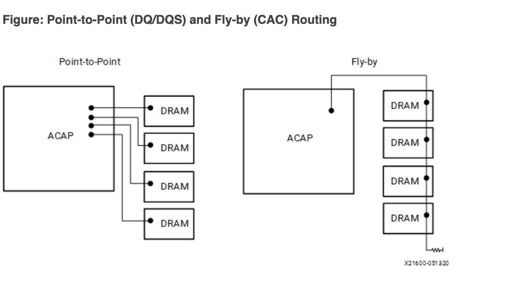
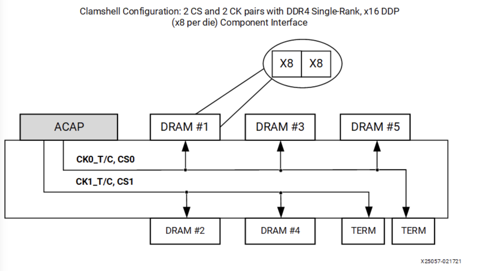
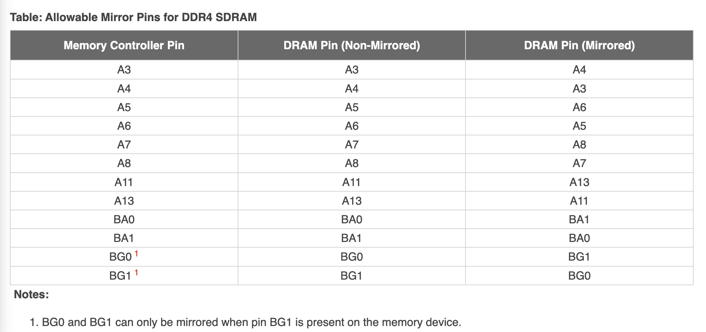
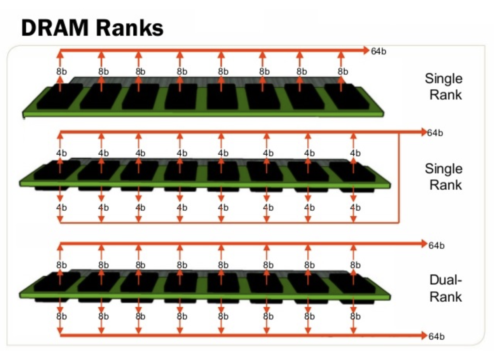

DRAM 的拓扑和训练¶
本文的内容已经整合到知识库中。
DRAM Training¶
DRAM 一直有一个比较麻烦的初始化过程，就是 DRAM Training，其中很重要的一步就是计算出各个数据线相对于时钟的偏移（skew）。这个偏移是怎么来的呢？
我们知道，对于 SRAM，如果想要更多的位宽，只需要把地址线和控制信号连接到多个 SRAM 上，然后把 SRAM 的数据信号并行连接到 FPGA 上就可以了，但是前提是要尽量保证等长，否则一样有偏移的问题。DRAM 也是采用类似的方法进行扩展的，但是 DRAM 通常需要并行连接很多个芯片，例如 8 个 x8 的芯片合并成一个 64 位的 DDR SDRAM。此时数据线依然是并行连接，但是地址线和控制信号就出现了走线困难：很难在那么小的空间里，等长地把地址和控制信号分布到各个芯片上，而且还有信号完整性的问题。
Fly-by topology¶
因此，实际上地址和控制信号是采用了串联的方式连接，也就是下图的右边的连接方式：

图源 Versal ACAP PCB Design User Guide (UG863)。
但是数据信号（DQ 和 DQS）依然是并行点对点连接到 DRAM 上的（上图左侧）。这就出现了问题：不同的 DRAM 芯片，数据和时钟的偏差不同，数据可能差不多时间到，但是时钟的延迟越来越大：
注：这里简化了，当成 SDR 来画。
不做任何处理的话，DRAM 采样得到的数据就不正确了。为了解决这个问题，就需要人为地在数据信号上也加上可变的延迟，保证时钟和数据同步，这样 DRAM 才可以实现正确的写入：
Write Leveling¶
为了解决写入时，时钟和数据有偏移的问题，需要采用 Write Leveling 方法来解决。具体思路是这样的：如果 DRAM 以时钟信号去采样数据信号可以得到正确的结果，那反过来，如果认为数据信号是时钟信号，在数据信号的上升沿去采样时钟，应该也可以观测到稳定的结果。
所以 Write Leveling 的工作方式就是：
- 设置 DRAM 进入 Write Leveling 模式，此时 DRAM 会使用 DQS 信号来采样 CK 信号，把结果输出到 DQ 上
- DDR 控制器不断地修改 DQS 的输出延迟，然后统计 DQ 上的输出
示意图如下：
上图中，用不断增大的四种延迟的 dqs 对 ck 进行采样：用 dqs_0 和 dqs_1 采样得到了 0，用 dqs_2 和 dqs_3 采样得到了 1。把这些结果列出来，可能会得到类似下面的结果：
也就是说，随着延迟增大，采样的数据从 0 变成 1，再从 1 变成 0。我们的目标是，让 dqs 和 ck 同步。在上图中，dqs_2 的上升沿和 ck 上升沿是最接近的，而刚好 dqs_2 也正好出现在采样 0 变成采样 1 的位置。这意味着，只要找到采样数据从 0 变成 1 的位置，就知道如何让 DQS 与 CK 同步了。
这样就完成了 Write Leveling 的步骤，实现了 DQS 与 CK 同步的目标，那么在写入数据的时候，DRAM 就可以得到正确的 DQS 信号了。
Read Leveling¶
在上一步的 Write Leveling 当中，通过修改内存控制器的输出延迟，保证了 DRAM 可以得到同步的 DQS 和 CK 信号，解决了 Fly by topology 引入的延迟不一致的问题。但是，对于读操作，数据从 DRAM 输出，输入到内存控制器，又会引入一定的延迟。所以对读操作，也需要进行校准。
回顾 SRAM，当想要测试读取功能的时候，会首先写入一些数据，再读出来，判断读取的数据和之前写入的数据是否一致。DRAM 也是类似的：先向 MPR 写入一些伪随机数据，然后要求 DRAM 从 MPR 中读取数据，而不是从 memory cell 中读取数据；然后内存控制器一侧不断进行读取操作，在不同的延迟下，比较读取的数据与预期的随机数据是否一致。最后也会得到一个延迟的区间，在这个区间内可以读取出正确的结果。最后，把延迟设定在区间的中央位置。
Clam Shell Topology¶
再回到拓扑的问题上来，实际上除了 Fly by topology，还有一种拓扑是 Clam shell topology：把 DRAM 分布在 PCB 的上面和下面，这样可以节省 PCB 的面积，但是走线就会比较困难：

直观地讲，两个芯片都放在 PCB 的正面，如果要连线的话，如果保证引脚顺序接近一致，就可以比较容易地连接，不会有很多交叉的地方。但如果一个在正面，另一个在背面，引脚的顺序就倒转过来了，连线的时候就比较困难。解决的办法是，修改引脚的顺序，把一些引脚的功能进行对调，使得走线更加简单：

图源 Versal ACAP PCB Design User Guide (UG863)
这里特意挑选了一些不影响特殊功能的引脚来交换，使得大部分功能，即使交换了引脚，也可以正常工作。但是，对于 Mode Register Set 操作，必须要内存控制器自己先内部交换位的顺序，才能保证在 DRAM 一侧得到正确的结果。
此外，Clam Shell Topology 的正面和背面各有一个 cs_n 片选信号，但是这和 Dual Rank 不同：Dual Rank 是正面和背面都有同样数量的 DRAM 芯片，共享地址信号、数据信号和控制信号，总线上同一时间只有一侧的 DRAM 芯片在使用，好处是内存容量翻倍，并且两个 rank 可以互相掩盖延迟；而 Clam Shell Topology 的两个 cs_n 是为了给 Mode Register Set 操作指定正面或背面，而其余的大部分操作，可以正面和背面同时使用，因为它们的数据信号并没有共享。

图源 DIFFERENCE BETWEEN DUAL RANK AND SINGLE RANK RAM
背景¶
实际上，前面的整个研究过程，来自于我对 VCU128 LiteX 移植的观察：VCU128 DDR4 memory calibration failure。我在配置 litedram 的时候，发现总是有一半的 DRAM 芯片无法使用，和 Datasheet 对照了以后，发现正好是 PCB 背面的那一半。接着，发现它是 Clam Shell Topology 方式来分布的，然后 Top 和 Bottom 各有一个 cs_n 信号，这一点在 UG1302 里是没有写的，在 xdc 里才可以找到：
set_property PACKAGE_PIN BK48 [get_ports "PL_DDR4_BOT_CS_B"] ;# Bank 66 VCCO - DDR4_VDDQ_1V2 - IO_L7P_T1L_N0_QBC_AD13P_66
set_property IOSTANDARD SSTL12_DCI [get_ports "PL_DDR4_BOT_CS_B"] ;# Bank 66 VCCO - DDR4_VDDQ_1V2 - IO_L7P_T1L_N0_QBC_AD13P_66
set_property PACKAGE_PIN BP49 [get_ports "PL_DDR4_CS_B"] ;# Bank 66 VCCO - DDR4_VDDQ_1V2 - IO_L1N_T0L_N1_DBC_66
set_property IOSTANDARD SSTL12 [get_ports "PL_DDR4_CS_B"] ;# Bank 66 VCCO - DDR4_VDDQ_1V2 - IO_L1N_T0L_N1_DBC_66
所以 Xilinx 文档也是可能出错的，需要结合多个信息源来判断。这里有 xdc 和 schematic 可以参考，都可以发现这个结论。
沿着这个思路，我给 litedram 添加了 clam shell topology 的支持：https://github.com/enjoy-digital/litedram/pull/332 和 https://github.com/enjoy-digital/litex/pull/1673，实现方法：
- 在校准阶段，把 Top 和 Bottom 两个 cs_n 暴露给软件，软件在 MRS 的时候，分两次写入，第一次原样写到 Top，第二次交换地址顺序，再写入 Bottom。
- 正常工作阶段，把 Top 和 Bottom 的两个 cs_n 当成一个用，也就是当成 single rank dram。
训练代码¶
下面结合 litex 和 litedram 的代码，以及 DDR4 标准，来验证上面的观察。
Write Leveling¶
Write Leveling 的核心函数是 sdram_write_leveling_scan，它的核心思路是：
第一步调用 sdram_write_leveling_on
打开 DRAM 的 Write Leveling 模式：
循环每个 DRAM 芯片的每个 DQS 信号：
for(i=0;i<SDRAM_PHY_MODULES;i++) {
for (dq_line = 0; dq_line < DQ_COUNT; dq_line++) {
/* 设置 DQS 初始延迟为 0 */
sdram_leveling_action(i, dq_line, write_rst_delay);
/* 循环 DQS 延迟 */
for(j=0;j<err_ddrphy_wdly;j++) {
int zero_count = 0;
int one_count = 0;
for (k=0; k<loops; k++) {
/* 发送 DQS 序列：00000001 */
ddrphy_wlevel_strobe_write(1);
/* 统计 1 和 0 的个数 */
if (buf[SDRAM_PHY_MODULES-1-i] != 0)
one_count++;
else
zero_count++;
}
if (one_count > zero_count)
/* DQS 采样到了 CK 的正半周期 */
taps_scan[j] = 1;
else
/* DQS 采样到了 CK 的负半周期 */
taps_scan[j] = 0;
/* 每次循环增加一次 DQS 延迟 */
sdram_leveling_action(i, dq_line, write_inc_delay);
}
/* 找到一个最长的连续 1 的序列 */
one_window_active = 0;
one_window_start = 0;
one_window_count = 0;
one_window_best_start = 0;
one_window_best_count = -1;
for(j=0;j<err_ddrphy_wdly+1;j++) {
if (one_window_active) {
if ((j == err_ddrphy_wdly) || (taps_scan[j] == 0)) {
/* 结束了一段连续的 1 */
one_window_active = 0;
one_window_count = j - one_window_start;
/* 记录最长的连续 1 的长度和位置 */
if (one_window_count > one_window_best_count) {
one_window_best_start = one_window_start;
one_window_best_count = one_window_count;
}
}
} else {
/* 找到连续的 1 的开头 */
if (j != err_ddrphy_wdly && taps_scan[j]) {
one_window_active = 1;
one_window_start = j;
}
}
}
/* 要找的延迟就是连续的 1 序列的开始位置 */
delays[i] = one_window_best_start;
}
}
sdram_write_leveling_off();
这样就实现了 Write Leveling 的全流程：
- 设置 DRAM 进入 Write Leveling 模式，DRAM 用 DQS 对 CK 采样，结果输出到 DQ
- 在不同的 DQS 延迟下，发送同样的 00000001 DQS 模式，观察 DQ 上的数据
- 统计 DQ 上的 1 和 0 的个数，如果 1 更多，就认为当前 DQS 延迟下，DQS 采样到了 CK 的正半周期；反之如果 0 更多，就认为当前 DQS 延迟下，DQS 采样到了 CK 的负半周期
- 在第三步的结果中，找到最长的连续的 1 序列，那么这个序列的开始，就对应了采样值从 0 到 1 的变化，此时 DQS 与 CK 基本同步
- 最后设置 DRAM 退出 Write Leveling 模式
参考文档¶
- https://www.systemverilog.io/design/ddr4-initialization-and-calibration/
- https://docs.xilinx.com/r/en-US/ug863-versal-pcb-design/Signals-and-Connections-for-DDR4-Interfaces
- https://docs.xilinx.com/r/en-US/pg353-versal-acap-soft-ddr4-mem-ip/Calibration-Overview
- https://docs.xilinx.com/r/en-US/pg313-network-on-chip/Clamshell-Topology
- https://docs.xilinx.com/r/en-US/ug863-versal-pcb-design/Utilizing-Address-Mirroring-to-Ease-Clamshell-Routing
- https://blog.memory4less.com/2022/09/16/difference-between-dual-rank-and-single-rank-ram/
- https://daffy1108.wordpress.com/2010/09/02/understanding-ddr3-write-leveling-and-read-leveling/